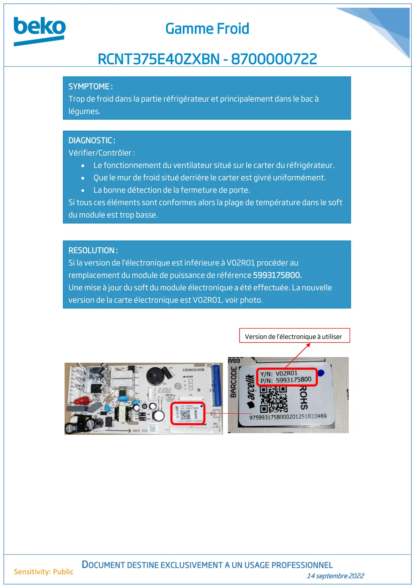

RCNT375E40ZXBN Trop de froid dans la partie REF Note Technique

Gamme FroidRCNT375E40ZXBN - 8700000722DOCUMENT DESTINE EXCLUSIVEMENT A UN USAGE PROFESSIONNEL14 septembre 2022Sensitivity: PublicSYMPTOME :Trop de froid dans la partie réfrigérateur et principalement dans le bac àlégumes.DIAGNOSTIC :Vérifier/Contrôler :•Le fonctionnement du ventilateur situé sur le carter du réfrigérateur.•Que le mur de froid situé derrière le carter est givré uniformément.•La bonne détection de la fermeture de porte.Si tous ces éléments sont conformes alors la plage de température dans le softdu module est trop basse.RESOLUTION :Si la version de l’électronique est inférieure à V02R01 procéder auremplacement du module de puissance de référence 5993175800.Une mise à jour du soft du module électronique a été effectuée. La nouvelleversion de la carte électronique est V02R01, voir photo.Version de l’électronique à utiliser
1 / 1